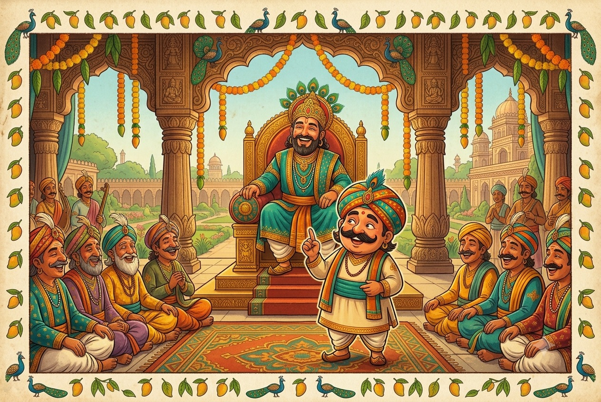

Tenali Raman
Stories
Five clever, funny tales from the court of a great king — where the sharpest weapon was never a sword, but a smile and a quick, quick mind.

A warm, storybook children's-book cover illustration in a South-Indian folk-art style on aged cream paper: a cheerful, round-faced court poet named Tenali Raman with a big moustache, a bright turban and twinkling eyes, standing with one finger raised as if about to make a clever joke, in front of a golden royal throne where a kind emperor sits smiling. Rich jewel tones — peacock teal, marigold gold, deep oxblood red — decorative border of little peacocks and mango leaves, no text baked into the image. Friendly and inviting for children under 12. Target size ~1200×800px, 3:2 landscape; keep Tenali and the throne centred with safe margins — the art is letterboxed into a 3:2 box, so keep nothing important near the edges.
Generate this with your image agent, then drop the file here.
The Tales Inside
- Meet Tenali Raman a real poet, a real king, and how the stories began
- The Gift of Goddess Kali how a bold, giggling boy earned his clever tongue
- The Thirsty Thieves robbers who watered a whole garden for free
- The Cat That Feared Milk one small cat outsmarts a royal order
- The Secret of the Brinjal Curry a promise that was a little too proud
- The Three Little Dolls a puzzle solved with a single length of thread
- The Moral Chest every lesson from every tale, on one page
Chapter one meets the real Tenali Raman. After that come five tales you can read in any order — before bed, out loud, or all in one happy afternoon. Turn the pages with → and ←, and press ↑ to hop back to this list. At the end of every tale, look for the gold ★ Moral stamp — that's the little bit of wisdom the story leaves behind.